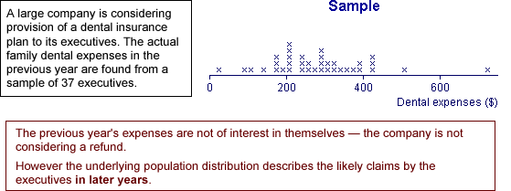

Generalising from data
Most data sets do not arise from randomly sampling individuals from a finite population. However we are still rarely interested in the specific individuals from whom data were collected.
The recorded data are often 'representative' of something more general.
The main aim is to generalise from the data.
